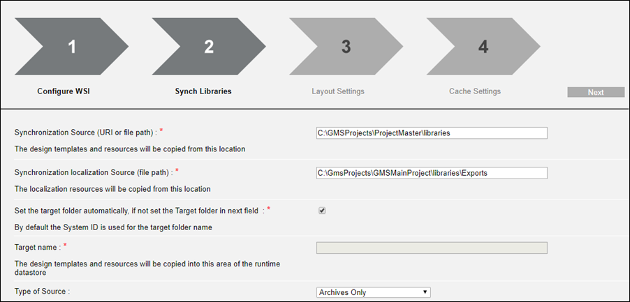

Setup Checklist for DMS Advanced Reports
DMS Advanced Reporting provides add-on functionality for the Advanced Reporting extension. This checklist summarizes the steps to get both Advanced Reporting and DMS Advanced Reporting up and running.
NOTE: If you already have Advanced Reporting installed and configured (see Installing and Configuring Advanced Reporting), and now want to add DMS Advanced Reports on top of it, most of these prerequisites will already be present in the system. You need only add the DMS Advanced Reporting extension and re-synchronize the templates.
Required extensions
The required extensions that need to be installed and added to the project are Application Host Base, Advanced Reporting, and DMS Advanced Reporting.
- When you select DMS Advanced Reporting, the other two are automatically selected if they are not already present in the project.
NOTE: Advanced Reporting also requires the Web Service Interface extension, which is however always installed and included by default.
Enable IIS
Perform this check on the computer (Desigo CC server, or separate Client/FEP station) that hosts the IIS web server:
- To check the IIS web server and enable it if needed, refer to the help page Additional Installer Procedures, section Manually Install and Configure IIS on Different OS Types.
The screenshot below provides an example of enabling IIS web server on the Windows 11 operating system.

NOTE: If the IIS web server was enabled after installing Desigo CC, it may be necessary to re-run the Gms.InstallerSetup.exe installer to make the Websites node available in SMC.
Application Request Routing
If you manually installed IIS web server you may need to also manually install Application Request Routing (ARR) on the same computer.
- To verify the existing ARR installation and install it if necessary, refer to the help page Website Procedures, section Install Application Request Routing (ARR).
- When ARR is installed, the IIS Manager application in Windows will show the Application Request Routing Cache icon.
- Additionally, it is necessary to double-click this icon to enable proxy settings. For specific instructions, refer to the help page Website Procedures, section refer to Enable Proxy for the Application Request Routing (ARR) Cache in IIS.

Tomcat Service and Connector Port
When you install the Advanced Reporting extension, the following components are installed on the Desigo CC server computer: Tomcat Application Server, Java Open JDK, and Business Intelligence and Reporting Tools (BIRT).
- When the installation is complete, the Apache Tomcat service is automatically started. You can check in Windows Services that it is running.
Check Tomcat connector port:
The value of the Tomcat port is required when configuring the Advanced Reporting web application in SMC.
- On the Desigo CC computer, under ProgramData\Siemens\GMS\InstallerFramework\GMS_Prerequisites_Insall_Log \, open the the log file named
Birt_Installer_<datetime>.txt - And note down the value of the
Apache Tomcat Port. The default is 18080, but this might be changed during installation if there were conflicts.
Web Service Communication in SMC Project
This setting in SMC configures a communication channel between the Desigo CC server and the IIS web server.
- For all deployments (remote IIS or local IIS), do these steps on the Desigo CC server computer.
- In SMC, stop and edit the project.
- Click Next to reach the page with the Web Services Communication expander.
NOTE: Do not confuse this with the Communication Security expander on the first page. The Web Server Communication section there is not required for Web Services and can be left Disabled. - In the expander, locate the communication instance you want to use (each one is on a separate row), or click Add to create a new one.
- Set the Communication field of the instance as follows:
- If the IIS web server is on the same computer as the Desigo CC server, set Local. (You do not need a certificate for this.)
- Otherwise you must set the communication Secured, and select the host certificate to use. See Certificates for Web Services.
- Enter a distinct instance name and adjust the port if required.
- Click Next to reach the final page, and Save
 the project.
the project.

For more detailed instructions, refer to the help page Setting up the Web Service Interface, section Configure the Web Service Settings.
Website in SMC
Websites are hosted on the computer where the IIS web server is running. You must have a website configured in SMC in order to create web services and web applications, such as those used for Flex Client or Advanced Reporting.
- For a local IIS deployment, do these steps on the Desigo CC server station.
- For a remote IIS deployment, do these steps on the separate Client/FEP station that hosts the IIS server.
- IIS is enabled on the computer that will host the website.
- In SMC select the Websites node, and on the toolbar click Create website.
(or, to modify an existing website, select it and click Edit) - In the Host name field, enter the computer running the IIS web server. This field is prefilled to the machine on which you are running SMC.
- Click Browse... to select the website User, and enter that user's Password.
If that user is not already a member of the IIS Users group, you will later be prompted to add it.
NOTE: In case of a remote IIS deployment, the website user must exist on the Desigo CC server as well as on the Desigo CC Client/FEP station that hosts the IIS server. - A Certificate is always required, because websites are https only. Client browsers that connect to web applications under this website will need to be able to recognize the certificate.
- If a self-signed certificate was previously created and set as default, the field is prefilled with that certificate.
- Otherwise you can click Create to generate and set a self-signed certificate.
- Alternatively you can Browse.. and select a host certificate.
- When finished click Save, and click OK to start creating the website.
- The website is automatically started.

For more information about website configuration refer to the help page Websites and Web Applications, section Websites.
For more information about certificate configuration refer to the help page Setting the Certificates as Default Certificates.
Web Services Application in SMC
A Web Services application, linked to a communication instance in your project, is required to support web applications such as Flex Client or Advanced Reporting, as well as the mobile app client. Web Services applications are created under websites in SMC. The URL of the website determines the URL of the Web Services application.
- For a local IIS deployment, do these steps on the Desigo CC server station.
- For a remote IIS deployment, do these steps on the separate Client/FEP station that hosts the IIS server.
- A website is configured in SMC.
- A web services communication instance is configured in the project.
- In SMC, select Websites > [website], and in the toolbar select Create Web Services Application.
(or, to modify an existing web service app, select it and click Edit.) - If you are working on the Desigo CC server station (local IIS deployment):
- The Server name is a read-only field, showing the name of this computer.
- Select the Project name, and underneath it shows the configuration done previously in the Web Services Communication expander of the project.
- Select the Instance to use, if more than one was configured in the project.
NOTE: In this case, you can use an Instance set to Local (without certificates). - If you are working on the Client/FEP station (remote IIS deployment):
- Next to the Server name field, enter the host name of the Desigo CC server computer, or use the Browse... button.
- Click Projects... and, from the dialog that opens, select the project for which you configured communication instance for web services, and click OK.
- The Project information: Web Services Communication expander is populated with the information pertaining to the selected project.
- Select the communication Instance to use, if more than one was configured in the project.
NOTE: In this case, you must select a Secured instance (with certificate). - In the Web Application Details expander:
- Assign a Name to the web service.
- The user/password fields are prepopulated with those of the website user.
- Click Save .

You can test the web service using the links:
- The Help URL link will show a "Welcome to the Web Service Interface" page.
- The URL link will show a message "URL not supposed to be displayed in a browser but entry point for API access".
Advanced Reporting Web Application in SMC
The advanced reporting web app also needs to be created under a website. This can be the same website under which you created the web service, or a different website.
- In SMC select Websites > [website] and in the toolbar select Create Advanced Reporting Application.
- In the configuration fields that appear:
- In URL leave the default, unless the tomcat connector port value was different from the default. See Check Tomcat Connector Port, above.
- In Web Services URL you can choose from a drop-down list one of the available web services.
- The user fields are prepopulated with those of the website user.
- Enter a Name for the web application.
- In System ID, put the value found in the Server Project Information tab of the project to which the web service is linked.

For more information about setting up the web application for advanced reporting, refer to the help page Installing and Configuring Advanced Reporting, section Create an Advanced Reporting Web Application.
You can test the advanced reporting web application using the links. The top URL (gms-birt) will show a BIRT version information page. The lowermost URL is the one that must be entered into the Extended Operation tab in the next step.
Main URL in Extended Operation tab
- In SMC, start the project where you did all the above configurations, and launch the Desigo CC client.
- In Desigo CC, select Applications > AdvancedReporting and, in ExtendedOperation, set the Main URL field to the URL of the advanced reporting web application in SMC (use copy URL, in the Web Application Details expander).

For more information, refer to the help page Installing and Configuring Advanced Reporting, section Configure the Main URL for Advanced Reporting.
Configuration Wizard
If all the preceding configuration steps are complete, it should now be possible to access the configuration wizard in Desigo CC.
- Set System Manager to Operating mode. (The wizard is not available in Engineering mode).
- In System Browser, select Applications > Advanced Reporting.
- In the Application Viewer tab, click the Configuration Page link.
- Click Review Wizard.
- Step 1 shows the web service URL (with /api/ after it). This is the web service that you selected when configuring the advanced reporting web application in SMC.
- Click Next.
- Step 2 (if the wizard has not been completed before) shows the configuration fields for template synchronization.

- In Synchronization Source, enter the path of the libraries folder of the project.
- In Synchronization localization Source, enter the path to the exports folder.
For more details about this configuration, refer to the help page Installing and Configuring Advanced Reporting, section Synchronize Advanced Reporting Templates. - Click Next.
- The Advanced Reporting templates, including those of DMS Advanced Reporting and any other dependent extensions, are synchronized.
- In steps 3 and 4 of the wizard, you can alter the default layout and cache settings as needed.
NOTE: If the wizard has previously been completed, when you reach Step 2 you will only see the Synchronization Source (project libraries) path that was set.
Re-Synchronize the Templates
After completing the initial configuration wizard (see step above) for Advanced Reporting, you may need to synchronize the templates again, for example if you subsequently install a dependent extension such as DMS Advanced Reporting, or if the templates in the libraries are updated.
- In Operating mode, in System Browser select Applications > Advanced Reporting.
- Select the Application Viewer tab.
- The Configuration section shows when the last template configuration was done.
- Click Synchronize.
- When finished, a list shows the report designs that have been synchronized from the Desigo CC libraries
When the above steps have been completed, you can proceed to Configuring DMS Advanced Reports.